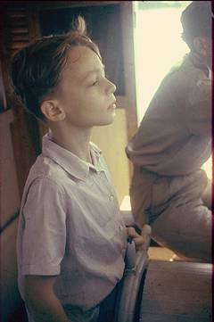
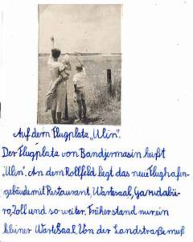
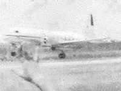
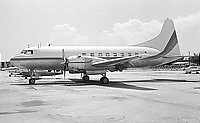

Die Ganztagesfahrt mit der Nussschale "Bali", die dem Händler Tan in Sampit gehörte, war unsere letzte inner-indonesiche Schiffsreise; ab dann ging alles per Flugzeug vom Flugplatz Ulin aus. Die Ko-Autorin meint zwar, das Bild sei auf der
San Jeronimo
entstanden, aber ich bin ganz sicher, dass das nicht richtig ist. Die San Jeronimo fuhr Große Fahrt nach Australien, und bei einem solchen Schiff konnte das Steuerruder kein solch kleines Rädchen sein. Es war übermannshoch, also erst recht überkindhoch. Außerdem was die Brücke auf der San Jeronimo natürlich so breit wie das Schiff und kein solch kleines Kabüffchen.
Ulin, Tor zur Welt
Der Flughafen von Banjarmasin hatte damals den schönen Namen "Ulin", nach dem Eisenholz, das in Kalimantan die Dächer bedeckte. Inzwischen heißt er
Syamsudin Noor, wie alle indonesischen Flughäfen nach Generälen oder den meisten Leuten unbekannten Heiligen.

Auf dem Flugplatz "Ulin"
Der Flugplatz von Bandjermasin heißt "Ulin". An dem Rollfeld liegt das neue Flughafengebäude mit Restaurant, Wartesaal, Garudabüro, Zoll und so weiter. Früher stand hier nur ein kleiner Wartesaal. Von der Landstraße muß man einen Seitenweg einbiegen, um dort hin zu kommen.
Wenn wir zum Flugplatz fahren, bringen wir meistens abreisende Bekannte weg, oder holen sie ab. Auf dem Heimweg gehen wir an die gegenüberliegende Seite des Rollfelds. Da wollen wir das Flugzeug abfliegen sehen.  Klaus hält immer große Vorträge, daß er mit will. Sobald die Maschine aber anrollt, rennt er zur Mami und sagt: "Ich habe Angst". Da müssen wir immer lachen. Auf dem Rückweg probiert Papi einen Wettlauf mit dem Flugzeug. Bald muß er es aufgeben.
Eine Convair von
airliner.net